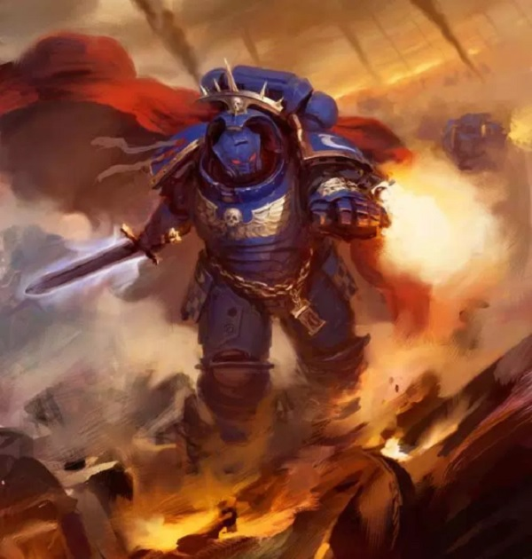
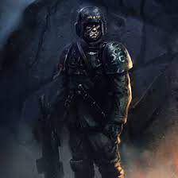
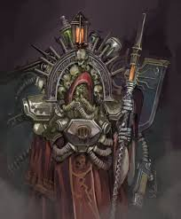
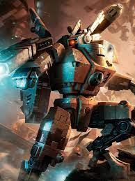
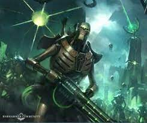
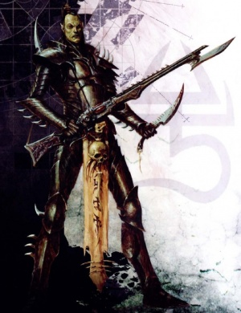
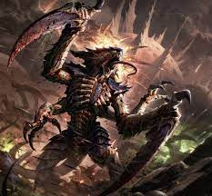
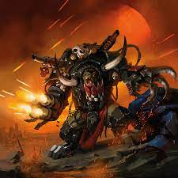
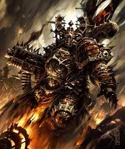
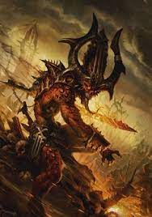

Warhammer 40,000 (souvent abrégé en Warhammer 40K, WH40K, voire simplement 40K) est un jeu de figurines produit depuis 1987 par la société Games Workshop, et situé dans un univers de fiction dystopique de type science fantasy.
Créé par Rick Priestley en 1987 en tant qu'extension futuriste de Warhammer Fantasy Battle, Warhammer 40,000 partage beaucoup de ses mécanismes de jeu avec son aîné. Des extensions pour Warhammer 40,000 sont publiées de temps à autre, qui fournissent des règles de combat urbain, sièges de planètes et combats à grande échelle. Le jeu en est actuellement à sa neuvième édition, publiée en juillet 2020.
Les joueurs peuvent assembler et peindre des figurines miniatures de 28mm qui représentent des soldats futuristes, des créatures et des véhicules de guerre. Ces figurines sont rassemblées pour composer des escadrons dans des armées qui peuvent être opposées à celles des autres joueurs. Chaque joueur apporte un nombre à peu près égal d'unités sur un champ de bataille donné, la table figurant le terrain, dans un décor créé à la main ou acheté dans le commerce. Les joueurs décident ensuite d'un scénario, allant d'une simple escarmouche à une bataille complexe impliquant objectifs à atteindre et renforts. Les figurines sont physiquement placées sur la table, et la distance réelle entre les figurines joue un rôle dans l'issue du combat. Le jeu se joue au tour par tour, avec des résultats déterminés par des tables et des matrices de résultats. Une bataille peut durer de une demi-heure à plusieurs jours, et les batailles peuvent être enchaînées sous forme de campagnes. Beaucoup de boutiques de jeu accueillent des parties et des tournois officiels sont organisés sur une base régulière.
Le cadre de fiction science fantasy de Warhammer 40,000 est une dystopie couvrant un vaste univers se situant au 41e millénaire. Différentes factions s'agitent au sein de cet univers, notamment l'Imperium de l'humanité, un empire totalitaire interstellaire, fanatique et décentralisé, qui rassemble la grande majorité de l'humanité depuis des millénaires et qui constitue la plus grande puissance militaire de la Voie lactée (cette force armée rassemble la Garde Impériale, les Space Marines, les Sœurs de Bataille, l'Inquisition et de nombreuses autres unités); les races en présence sont les Orks (similaires aux Orques de Warhammer Fantasy Battle), les Eldars (semblables aux Hauts-Elfes dans Warhammer Fantasy Battle), les Démons du Chaos (très similaires dans les deux univers, bien que la nature exacte de leur création et existence varie légèrement), les Tau, les Nécrons, les Tyranides et les Eldars Noirs.
Le contexte et les règles de jeu de chaque faction sont présentés dans le livre de règles du jeu et des « Codex » supplémentaires pour les armées, ainsi que par des articles dans les magazines de Games Workshop, White Dwarf (n° 1 des Magazines Warhammer 40,000) et Imperial Armour. Les figurines du jeu sont produites par Citadel Miniatures et Forge World.
L'univers de Warhammer 40,000 est utilisé dans plusieurs jeux de figurine, des jeux vidéo et des œuvres de fiction comme des romans sous licence publiées par la Black Library, une filiale de Games Workshop.
Le jeu Warhammer 40,000 prend place dans un univers de science-fiction dystopique. Situés dans le 41e millénaire apr. J.-C., la majorité des scénarios principaux fournissent le contexte et la trame de l'histoire au fil des millénaires.
Dans l'univers de Warhammer 40,000, l'humanité a perdu son statut de superpuissance intergalactique et son âge d'or technologique après l'hérésie d'Horus, rétrogradant l'humanité de plusieurs millénaires en arrière avec un mode de pensée très « religieux ». Dans l'Imperium, régime totalitaire, toutes les actions des forces armées sont guidées par un seul et même homme: l'Empereur. Éminent personnage de l'univers de Warhammer 40000, il se fait également appeler dieu de la race humaine ou encore seigneur de l'Imperium. Après sa victoire contre Horus, son fils, il est perçu comme un véritable dieu. Les restes de son vaste empire qui s'est étendu à travers toute la Voie Lactée est largement fédérée dans le cadre de l'Imperium. Les forces armées de l'Imperium sont constituées de plusieurs groupes ayant chacun un rôle précis:
Les Spaces Marines, la force d'élite de l'Imperium constituée de plusieurs chapitres, chacun avec ses propres caractéristiques, traditions et rites4 . Il en existe de deux niveaux, les classiques, ainsi que les Primaris, apparus lors de la version 8 du jeu;
La Garde impériale, ou Astra Militarum, la plus grande armée de l’Imperium, est constituée de simples humains.
L'Adeptus Mechanicus, technoprêtres [archive] de l'Imperium sont la force de travail hautement qualifiée servant à la construction du matériel militaire sophistiqué de l'Imperium. Bien qu'ayant oublié la science et la considérant comme une force divine conférée par le "Dieu-Machine", ils sont capables de produire de réelles merveilles technologiques comme les chevaliers impériaux [archive]. Ils habitent des "mondes forges" dont le nexus est Mars.
L'imperium partage la galaxie avec diverses races extra-terrestres
Les Tau, une jeune civilisation dont le niveau technologique a déjà dépassé celui de l’Imperium. Toutefois, ils ignorent le Warp, ce qui les réduit à se déplacer à l'aide de lents moteurs classiques. Ces aliens croient au « Bien Suprême », le T'au Va. Leur but est de convaincre les autres peuples: le Bien Suprême ou la mort. Ils restent néanmoins la faction la plus tolérante envers les autres races de Warhammer 40,000 de par leur intégration de plusieurs races qu'ils ont réussi à convaincre du Bien Suprême, notamment les Kroots et les Frelons Vespides;
Les Nécrons, anciennement organiques, ont conclu un pacte avec les C'tan dans l'espoir de devenir immortels et ont été transformés en une race de guerriers métalliques ayant la faculté de s’auto-réparer. Seuls les aristocrates et les chefs de guerre disposent d’un corps qui leur permet de ressentir des sentiments et de conserver leur mémoire ; le reste de ce peuple est constitué de zombies robotisés et obéissants ayant perdu tout souvenir de leur passé. C'est la race dont la technologie est la plus avancée ;
Les Eldars Noirs, pervertis au plus haut point, se nourrissent de la peur et de la douleur de leurs victimes. Contrairement aux Eldars, ils ne cherchent pas à tenir Slannesh à distance au travers de la Voie de l'Eldar, mais au contraire en plongeant toujours plus profondément dans leur décadence afin de le satisfaire;
Les Tyranides, sont une race d'aliens pratiquant la bio-ingénierie commandée par un seul et unique esprit de la ruche, qui a pour seul but de dévorer et d’évoluer;
Les Orks, qui se reproduisent par spores et dont la personnalité turbulente, les tactiques et la biologie font le comique de la série. Toutefois, les Orks sont les êtres les plus brutaux et violents de la galaxie, et faute d'ennemis évidents, ils se battent volontiers entre eux. Leurs mœurs sont barbares et cruelles ; ils écorchent vifs leurs victimes pour rigoler un bon coup, utilisent des armes rouillées, pleines de dents et de pointes douloureuses. À cause de leur système de « reproduction » hors du commun, ils sont l'espèce la plus nombreuse dans la galaxie et s'ils cessaient leurs guerres intestines, ils ne tarderaient pas à s'emparer de la galaxie.
La faction du Chaos est composée de deux races:
 Les Space Marines du Chaos, qui correspondent au reflet démoniaque des Space Marines et qui sont apparus lors de l'Hérésie d'Horus (sorte de Schisme entre Space Marines et Space Marines du Chaos). Avec eux se retrouvent les cultistes du Chaos, de simples humains vénérant les dieux du Chaos, travaillant souvent de pair avec les Space Marines du Chaos, forment la chair à canon de ces derniers;
Les Démons du Chaos. Ils sont composés de démons mineurs et majeurs, et servent quatre Dieux : Khorne, le Seigneur des Massacres ; Tzeentch, l'Architecte du changement ; Nurgle, le Père de la Peste et Slaanesh, le Prince des Excès. Les trois premiers sont à l'origine de la création des Space Marines du Chaos et le quatrième est né de la chute de l'empire Eldar, miné par la décadence.